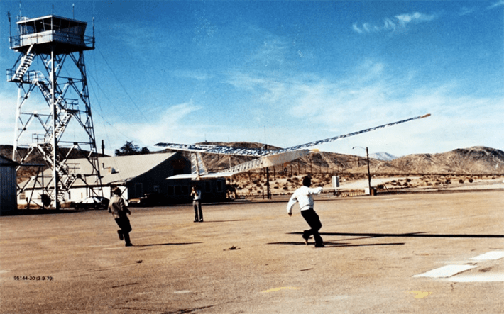

As you prepare for holiday flights and the many burdens they entail, your concerns of nerve-racking delays and inlaw interactions may overshadow a concerning consequence: Air travel accounts for about 3.5 percent of all human-driven climate change, according to a 2021 paper. This might sound minor, but this impact largely falls on a tiny percentage of the global population. Around 1 percent of all people on Earth are responsible for half of all carbon dioxide emissions from commercial aviation, and the vast majority of people on our planet don’t fly internationally each year.
The aviation industry has long attempted to reckon with its emissions issue—in fact, electric planes have been in the works for a century and a half. Along the way, all sorts of high-flying experiments have aimed to transform the way we lift off.
These include solar planes, the first of which recently had its 51-year anniversary. On Nov. 4, 1974, the remotely controlled Sunrise I soared for 20 minutes above the Mojave Desert in California at a maximum altitude of around 300 feet. It was a proof-of-concept monoplane—developed by the company AstroFlight under a federal government contract—that aimed to demonstrate such an aircraft, with an “inexhaustible” energy source, could “bask in the unattenuated sun” in the upper atmosphere.

UP AND AWAY: Sunrise I during a 1974 test by AstroFlight. Photo by Roland Boucher / Wikimedia Commons.
Sunrise I measured only around 14 feet long and weighed nearly 23 pounds. Six arrays of solar cells were attached to the tops of the wings, and the craft was powered by a single motor and propeller.
At the time, solar cells were about half as efficient as today’s technology. The AstroFlight team quickly created an improved model, Sunrise II, which was 13 percent lighter and had 33 percent more power than its predecessor. On a test flight in September 1975, Sunrise II reached an altitude 17,200 feet but sustained “severe” damage before reaching the goal of 73,000 feet.
Half a century later, why can’t solar-powered planes whisk us to our holiday destinations and shrink our carbon footprints? After all, in 2021, the aviation industry resolved to achieve net-zero carbon emissions by 2050.
The major limiting factor relates to a question posed by President Donald Trump during his 2024 campaign: “What happens if the sun isn’t shining while you’re up in the air?”
Read more: “A Nonlinear History of Time Travel”
Energy sourced from the sun must be stored in batteries to provide continuous electricity when shooting through clouds or flying at night. But at the moment, scientists are still figuring out how to design batteries that are energy-dense enough—but still light enough—to power aircraft as massive as jumbo jets over long trips.
Current battery energy density might need to quadruple for electric planes to “play a more significant role in decarbonizing air travel,” Andreas Schafer, director of the air transportation systems lab at University College London, told MIT Technology Review. This might prove impossible with the lithium-ion batteries that currently power electric vehicles and many consumer electronics.
This pickle makes any sort of fully electric plane tricky, whether the electricity comes from hydrogen, solar, or any other source. For now, electric planes remain pretty petite and limited to short trips with tiny manifests. For example, wee models like Vermont-based Beta Technologies’ Alia CX300, which seats up to five passengers, have intrigued major airlines and governments including Norway, China, and the United Arab Emirates.
Compared to other types of e-planes, solar-powered models face some unique barriers. As these aircraft soar through the skies, solar cells don’t always capture energy at the optimal angle, not to mention those pesky shadows from clouds.
Beyond the battery barriers, solar panels can’t currently deliver enough power to keep behemoth airliners aloft on their own. Even if a Boeing 737’s wing was covered in solar panels, this would yield 0.4 percent of the power needed to stay aloft, according to an estimate by Rhett Allain, an associate professor of physics at Southeastern Louisiana University. “It's pretty hard to envision any way of making a solar-powered passenger liner,” he wrote for Wired. Allain added that he is, however, more optimistic about electric planes more broadly.
Such challenges haven’t stopped daredevils from pushing these planes to their limits. Between 2015 and 2016, a plane that ran on more than 17,000 solar cells circled the world over 16 legs—these individual flights lasted up to five days at a time.
And this past August, Swiss pilot Raphaël Domjan soaredabove the Valais Alps in Europe and broke the altitude record for solar planes. He reached more than 31,200 feet, around the cruising altitude of commercial flights.
While you’re most likely not making your way to Thanksgiving via solar plane this week, we might ascend toward accessible, low-emissions flights within our lifetimes. 
Enjoying Nautilus? Subscribe to our free newsletter.
Lead image: Ccoonnrraadd / Shutterstock